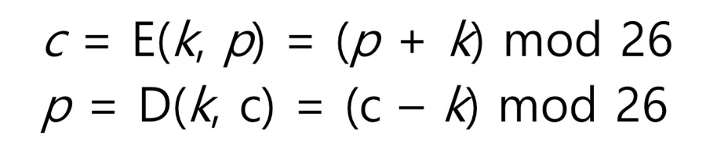

Введение в основные принципы криптографии
Криптография — это практика разработки и использования закодированных алгоритмов для защиты и сокрытия передаваемой информации, чтобы ее могли прочитать только те, у кого есть разрешение и возможность ее расшифровать. Иными словами, криптография скрывает информацию, чтобы неавторизованные лица не могли получить к ней доступ.
Криптография, происходящая от греческих слов "kryptos" (скрытый) и "graphein" (писать), — это практика и изучение методов, используемых для защиты связи и информации от противников или третьих лиц. Она составляет основу современной информационной безопасности и используется в различных приложениях, включая безопасную связь, проверку целостности данных и аутентификацию. Вот введение в основные принципы криптографии:
1. Конфиденциальность: Одной из основных целей криптографии является достижение конфиденциальности, гарантирующей, что только уполномоченные стороны могут получить доступ к передаваемой информации и понять ее. Обычно это достигается с помощью шифрования, которое предполагает преобразование открытого текста (оригинального сообщения) в шифротекст (неразборчивую форму) с помощью криптографических алгоритмов и ключей.
2. Целостность: Криптография также направлена на обеспечение целостности данных, гарантируя, что информация останется неизменной и не изменится во время передачи или хранения. Это достигается с помощью таких методов, как коды аутентификации сообщений (MAC) и цифровые подписи, которые позволяют получателям проверять подлинность и целостность полученных данных.
3. Аутентификация: Криптография предоставляет механизмы для проверки личности общающихся сторон, обеспечивая обмен сообщениями только между доверенными лицами. Методы аутентификации включают цифровые подписи, сертификаты и криптографические протоколы, такие как TLS/SSL (Transport Layer Security/Secure Sockets Layer).
4. Не отрицание: Не отрицание гарантирует, что отправитель сообщения не сможет отрицать его отправку, а получатель не сможет отрицать его получение. Обычно это достигается за счет использования цифровых подписей, которые обеспечивают доказательство происхождения и целостности сообщения.
5. Управление ключами: Криптография опирается на криптографические ключи для шифрования, дешифрования, аутентификации и других операций. Управление ключами включает в себя безопасную генерацию, распределение, хранение и утилизацию криптографических ключей для предотвращения несанкционированного доступа и обеспечения безопасности зашифрованных данных.
6. Криптографические алгоритмы: Криптографические алгоритмы составляют основу криптографических операций, включая шифрование, дешифрование, хеширование и цифровые подписи. Эти алгоритмы предназначены для обеспечения таких свойств безопасности, как конфиденциальность, целостность и аутентичность, и при этом противостоят различным атакам и уязвимостям.
7. Криптоанализ: Криптоанализ - это изучение криптографических техник и алгоритмов с целью взлома или обхода их защитных свойств. Он включает в себя анализ криптографических систем с целью выявления слабых мест, уязвимостей или недостатков, которые могут быть использованы злоумышленниками для нарушения безопасности системы.
В целом криптография играет важнейшую роль в обеспечении безопасности конфиденциальной информации и каналов связи в цифровую эпоху. Понимая и применяя основные принципы криптографии, организации и частные лица могут защитить свои данные от несанкционированного доступа, фальсификации и перехвата, сохраняя тем самым конфиденциальность, целостность и подлинность.
Симметричное и асимметричное шифрование
Сегодня используются два основных типа шифрования: симметричная и асимметричная криптография. Оба типа используют ключи для шифрования и расшифровки отправляемых и получаемых данных. Существуют также гибридные криптосистемы, сочетающие оба типа. Криптосистема считается симметричной, если каждая сторона - отправитель и получатель - использует один и тот же ключ для шифрования и расшифровки данных. Такие алгоритмы, как Advanced Encryption Standard (AES) и Data Encryption Standard (DES), относятся к симметричным системам. В асимметричной криптографии используется несколько ключей - один общий, а другой закрытый. Таким образом, отправитель и получатель зашифрованного сообщения имеют асимметричные ключи, а система является асимметричной. RSA - названный так в честь его создателей Ривеста, Шамира и Адлемана - является одним из самых распространенных алгоритмов шифрования с открытым ключом. Хотя асимметричные системы часто считаются более безопасными из-за использования закрытых ключей, истинная мера силы системы в большей степени зависит от длины и сложности ключа. Сегодня используются два основных типа шифрования: симметричная и асимметричная криптография. Оба типа используют ключи для шифрования и расшифровки отправляемых и получаемых данных. Существуют также гибридные криптосистемы, сочетающие оба типа. Криптосистема считается симметричной, если каждая сторона - отправитель и получатель - использует один и тот же ключ для шифрования и расшифровки данных. Такие алгоритмы, как Advanced Encryption Standard (AES) и Data Encryption Standard (DES), относятся к симметричным системам. В асимметричной криптографии используется несколько ключей - один общий, а другой закрытый. Таким образом, отправитель и получатель зашифрованного сообщения имеют асимметричные ключи, а система является асимметричной. RSA - названный так в честь его создателей Ривеста, Шамира и Адлемана - является одним из самых распространенных алгоритмов шифрования с открытым ключом. Хотя асимметричные системы часто считаются более безопасными из-за использования закрытых ключей, истинная мера силы системы в большей степени зависит от длины и сложности ключа.
Симметричная криптография
В криптографии с симметричным ключом используется общий ключ как для шифрования, так и для дешифрования. В симметричной криптографии и отправитель, и получатель зашифрованного сообщения имеют доступ к одному и тому же секретному ключу. Шифр Цезаря - ранний пример системы с одним ключом. Этот примитивный шифр работал путем переноса каждой буквы сообщения на три буквы вперед, что превращало слово "cat" в "fdw”. Поскольку генералы Цезаря знали ключ, они смогли бы расшифровать сообщение, просто изменив транспозицию на противоположную. Таким образом, симметричные криптосистемы требуют, чтобы каждая сторона имела доступ к секретному ключу перед шифрованием, отправкой и расшифровкой любой информации.
К основным преимуществам симметричного шифрования относятся следующие:
• Скорость: процесс шифрования происходит сравнительно быстро.
• Эффективность: Шифрование с одним ключом хорошо подходит для больших объемов данных и требует меньше ресурсов.
• Конфиденциальность: Симметричное шифрование эффективно защищает данные и не позволяет расшифровать информацию любому, кто не имеет ключа.
Преимущества:
Эффективность: Симметричное шифрование, как правило, быстрее и эффективнее асимметричного, что делает его подходящим для шифрования больших объемов данных.
Простота: Поскольку для шифрования и дешифрования используется только один ключ, симметричное шифрование относительно просто в реализации и использовании.
Примеры использования:
Безопасная связь: Симметричное шифрование часто используется для защиты каналов связи, где обе стороны имеют общий секретный ключ, например, в виртуальных частных сетях (VPN) и протоколах SSL/TLS (Secure Sockets Layer/Transport Layer Security).
Хранение данных: Обычно используется для шифрования данных, хранящихся на устройствах или в базах данных, чтобы предотвратить несанкционированный доступ.
Асимметричная криптография
Асимметричная криптография (также называемая криптографией с открытым ключом) использует один закрытый и один открытый ключи. Для расшифровки данных, зашифрованных с помощью открытого и закрытого ключей, требуется как открытый ключ, так и закрытый ключ получателя. Криптография с открытым ключом обеспечивает безопасный обмен ключами на незащищенном носителе без необходимости делиться секретным ключом для расшифровки, поскольку открытый ключ используется только в процессе шифрования, но не расшифровки. Таким образом, асимметричное шифрование добавляет дополнительный уровень безопасности, поскольку личный ключ человека никогда не передается.
К основным характеристикам симметричного шифрования относятся следующие:
• Безопасность: Асимметричное шифрование обычно считается более безопасным.
• Надежность: Криптография с открытым ключом дает дополнительные преимущества, обеспечивая конфиденциальность, подлинность и неотказуемость.
• Ресурсоемкость: В отличие от шифрования с одним ключом, асимметричное шифрование работает медленно и требует больших ресурсов, которые в некоторых случаях могут быть непомерно дорогими.
Преимущества:
Распределение ключей: Асимметричное шифрование устраняет необходимость в безопасном обмене ключами, поскольку открытый ключ может свободно распространяться, в то время как закрытый ключ остается секретным.
Аутентификация: Криптография с открытым ключом позволяет использовать цифровые подписи, что дает пользователям возможность проверять подлинность и целостность сообщений без обмена секретными ключами.
Примеры использования:
Безопасный обмен ключами: Асимметричное шифрование обычно используется для создания защищенных каналов связи между сторонами, которые ранее не делились секретным ключом, например, во время начального рукопожатия в протоколах TLS/SSL.
Цифровые подписи: используется для обеспечения безотзывности и проверки подлинности цифровых документов, транзакций и сообщений.
Шифр Цезаря
Шифр Цезаря — это один из простейших и наиболее известных методов шифрования, который был использован ещё в древности. Он получил своё название в честь римского императора Цезаря, который, по преданию, использовал этот метод для обмена сообщениями со своими генералами. Шифр Цезаря основан на сдвиге букв в алфавите на определенное количество позиций. Например, при шифре сдвига на 3 позиции, буква "A" будет заменена на "D", "B" на "E", и так далее. Последовательность алфавита зацикливается, так что после буквы "Z" идет снова буква "A".
Пример:
Давайте возьмем слово "HELLO" и зашифруем его шифром Цезаря со сдвигом на 3 позиции.
"H" станет "K".
"E" станет "H".
"L" станет "O".
"L" станет "O".
"O" станет "R".
Таким образом, зашифрованное слово "HELLO" станет "KHOOR".
Расшифровка:
Для расшифровки сообщения, полученного с использованием шифра Цезаря, нужно просто сдвинуть буквы обратно на ту же самую количество позиций. Например, если вы знаете, что сообщение зашифровано со сдвигом на 3 позиции, вы можете применить обратное смещение и вернуться к исходному тексту.

В современном мире шифр Цезаря редко используется для защиты конфиденциальной информации из-за своей простоты и уязвимости. Однако его можно использовать как учебное упражнение для изучения принципов шифрования или в качестве части более сложных криптографических алгоритмов.
Хэширование и цифровые подписи
Хэш-функции и криптография с открытым ключом являются основными элементами систем цифровой подписи и находят сегодня широкое применение.
Цифровая подпись - это криптографический механизм, используемый для проверки подлинности и целостности цифровых данных. Ее можно представить как цифровую версию обычной рукописной подписи, но более сложную и безопасную.
Проще говоря, цифровую подпись можно представить как единый код, прикрепленный к сообщению или документу. После создания кода он служит доказательством того, что сообщение не было подделано на пути от отправителя к получателю.
Функции хэширования
Хеширование- один из ключевых элементов системы цифровой подписи. Хеширование подразумевает преобразование данных любого размера в значение фиксированного размера. Это делается с помощью специального алгоритма, известного как хэш-функция. Результирующее значение, полученное с помощью хэш-функции, называется хэш-значением или дайджестом сообщения. В сочетании с криптографией так называемая криптографическая хэш-функция может генерировать хэш-значение, которое можно использовать в качестве уникального цифрового отпечатка пальца. Это означает, что малейшее изменение входных данных (сообщения) приведет к совершенно иному результату (хэш-значению), поэтому криптографические хэш-функции широко используются для проверки подлинности цифровых данных.
Как работает цифровая подпись?
В криптовалютном мире системы цифровой подписи часто состоят из трех основных этапов: хэширования, подписания и проверки.
1. Хеширование данных
Первый шаг - хэширование сообщения или цифровых данных. Для этого данные передаются алгоритму хэширования, который генерирует хэш-значение. Как уже говорилось, сообщения могут значительно отличаться по размеру, но при хешировании они будут иметь хеш-значение одинаковой длины. Это самое основное свойство хэш-функции.
Однако для создания цифровой подписи не обязательно хэшировать данные, можно использовать закрытый ключ для подписи сообщения, которое вообще не хэшируется. Однако в случае с криптовалютами данные всегда хэшируются, поскольку работа с дайджестом фиксированной длины облегчает весь процесс.
2. Подписание
После того как информация была хэширована, ее необходимо подписать отправителем сообщения. Здесь на помощь приходит криптография с открытым ключом. Существует множество различных алгоритмов цифровой подписи, каждый из которых имеет свой собственный уникальный механизм, но в основном хэшированное сообщение подписывается закрытым ключом, который получатель сообщения может проверить с помощью соответствующего открытого ключа (предоставленного подписывающим).
Другими словами, если закрытый ключ не включен в подпись, получатель сообщения не сможет использовать соответствующий открытый ключ для его проверки. И открытый, и закрытый ключи генерируются отправителем сообщения, но получателю передается только открытый ключ.
Стоит отметить, что цифровая подпись напрямую связана с содержанием каждого сообщения, поэтому, в отличие от рукописной подписи, каждое сообщение с цифровой подписью будет иметь свою цифровую подпись.
3. Верификация
Чтобы проиллюстрировать весь процесс, предшествующий последнему этапу проверки, давайте рассмотрим пример: допустим, Алиса пишет сообщение Бобу, хэширует его, а затем генерирует цифровую подпись из хэш-значения и своего закрытого ключа. Эта подпись будет использоваться как уникальный цифровой отпечаток данного сообщения.
Когда Боб получит сообщение, он сможет проверить достоверность цифровой подписи с помощью открытого ключа, предоставленного Алисой. Таким образом, Боб может быть уверен, что подпись была сгенерирована Алисой, поскольку только Алиса обладает закрытым ключом, соответствующим открытому ключу (по крайней мере, насколько мы предполагаем). Поэтому Алиса должна хранить свой закрытый ключ в безопасности. Если кто-то другой получит в свои руки закрытый ключ Алисы, он сможет создать цифровую подпись и выдать себя за нее. В случае с биткоином это означает, что кто-то может переместить или потратить биткоины Алисы без ее разрешения.
Почему цифровые подписи важны?
Цифровые подписи используются в основном для достижения трех целей: целостности данных, аутентичности и неотказуемости.
1. Целостность данных: Боб может убедиться, что сообщение Алисы не было изменено во время его передачи. Если бы сообщение было изменено, была бы сгенерирована совершенно другая подпись.
2. Аутентичность: Пока закрытый ключ Алисы находится в безопасности, Боб может убедиться, что цифровая подпись была создана Алисой и никем другим.
3. Неотрицание: после создания подписи Алиса не сможет в будущем отрицать, что она подписала сообщение, если только ее закрытый ключ не будет раскрыт по каким-то особым причинам.
Примеры использования
Цифровые подписи могут применяться к различным видам цифровых документов и сертификатов. Таким образом, цифровые подписи используются в самых разных сферах, среди которых наиболее распространенными являются следующие: информационные технологии; финансы; юриспруденция; здравоохранение; блокчейн.
Ограничения
Основные проблемы, с которыми сталкиваются схемы цифровой подписи, обусловлены тремя минимальными требованиями: алгоритмы; реализация; закрытый ключ;
Электронные подписи и цифровые подписи
Говоря простым языком, цифровая подпись относится к определенному виду электронной подписи, которая обозначает способ подписания документов и сообщений электронным способом. Таким образом, все цифровые подписи являются электронными подписями, но электронные подписи не всегда являются цифровыми подписями. Основное различие между ними заключается в способе проверки подлинности. В цифровых подписях используются криптографические системы, такие как хэш-функции, криптография с открытым ключом и криптографические методы. Хэш-функции и криптография с открытым ключом лежат в основе систем цифровой подписи, которые сегодня находят широкое применение. При правильной реализации цифровые подписи могут повысить безопасность, обеспечить целостность и аутентификацию всех видов цифровых данных. В мире блокчейна цифровые подписи используются для подписания и утверждения криптовалютных транзакций. Эти подписи особенно важны для биткойна, поскольку монеты могут тратить только те, кто владеет соответствующими закрытыми ключами.
Хотя электронные и цифровые подписи существуют уже много лет, им еще есть куда расти. Сегодня многие бюрократические структуры все еще основаны на бумажном документообороте, но по мере перехода к более цифровым системам схемы цифровой подписи, вероятно, получат все большее распространение.